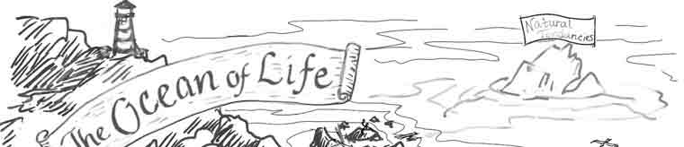
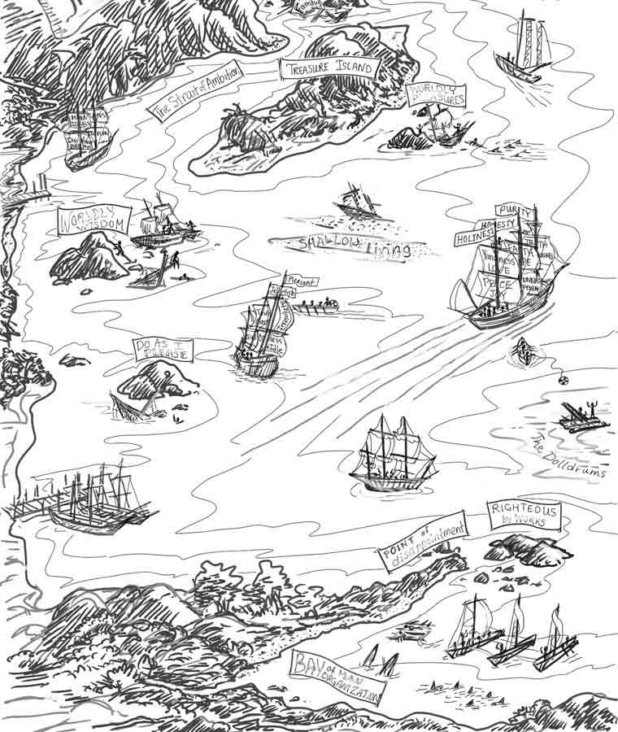
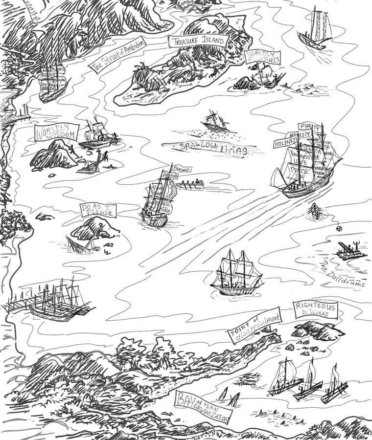

We sail along toward the harbor light,
Over the great life sea;
The breakers roar and the waves dash high,
Who will our pilot be?
We sail along in the morning bright,
Happy and glad are we;
But still we ask, as the rocks draw near,
Who will our pilot be?
We sail along, there are shoals, they say,
Dangers from which to flee;
We face the storm with a heavy heart,
Who will our pilot be?*
—Lizzie DeArmond